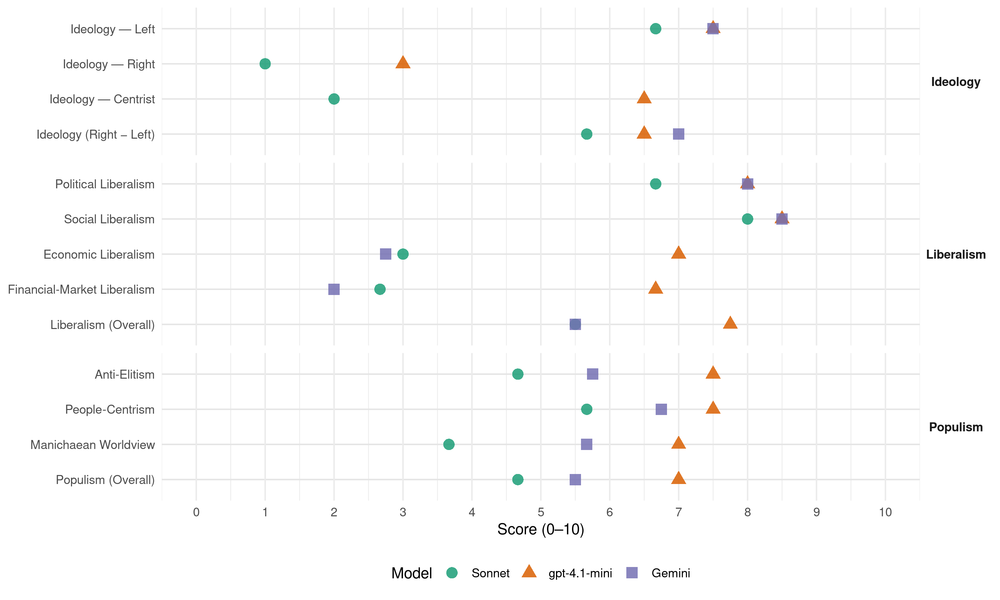

(Spain, 2016)
manifesto_id 33210_201606
Get full text: This site shows derived annotations and short verbatim quotes only. The full manifesto text is © Manifesto Project / WZB — obtain it via manifesto-project.wzb.eu using the manifesto_id above.
Headline scores
| Dimension | Sonnet | gpt-4.1-mini | Gemini |
|---|---|---|---|
| Populism (Overall) | 4.7 | 7.0 | 5.5 |
| Anti-Elitism | 4.7 | 7.5 | 5.8 |
| People-Centrism | 5.7 | 7.5 | 6.8 |
| Manichaean Worldview | 3.7 | 7.0 | 5.7 |
| Ideology (Right − Left) | 5.7 | 6.5 | 7.0 |
| Liberalism (Overall) | 5.5 | 7.8 | 5.5 |
| Political Liberalism | 6.7 | 8.0 | 8.0 |
| Social Liberalism | 8.0 | 8.5 | 8.5 |
| Economic Liberalism | 3.0 | 7.0 | 2.8 |
| Financial-Market Liberalism | 2.7 | 6.7 | 2.0 |
Evidence per dimension
Economic Liberalism
Gemini · score 3.0 · verified · chunk 1
“impedir prácticas oligopólicas en el sistema eléctrico”
Estableceremos controles efectivos para impedir prácticas oligopólicas en el sistema eléctrico, incluida la integración vertical.
Gemini · score 2.0 · verified · chunk 2
“establecen medidas de fomento, de intervención y control del mercado”
afecta a la vivienda privada y se establecen medidas de fomento, de intervención y control del mercado.
Gemini · score 3.0 · verified · chunk 3
“Recuperaremos las competencias que se han privatizado”
Recuperaremos las competencias que se han privatizado o externalizado, y orientaremos nuestras decisiones siempre en función de los principios del bien común
Gemini · score 3.0 · verified · chunk 4
“mediación estatal en el precio”
Abogaremos por la mediación estatal en el precio del aceite de oliva para acabar con las prácticas abusivas.
gpt-4.1-mini · score 7.0 · verified · chunk 1
“liberalizaremos la contratación pública”
Potenciaremos la aplicación efectiva de cláusulas sociales para el acceso a los concursos públicos basados en compromisos de creación de empleo, desarrollo local, cohesión social y responsabilidad social corporativa (RSC). Eliminaremos las trabas y condiciones discriminatorias que puedan impedir o perjudicar la competitividad de algunas de estas empresas en su acceso a los sistemas de contratación pública.
gpt-4.1-mini · score 7.0 · verified · chunk 2
“Promoveremos una reforma de la Ley 29 / 1994, de 24 de noviembre, de arrendamientos urbanos”
Promoveremos una reforma de la Ley 29 / 1994, de 24 de noviembre, de arrendamientos urbanos, para facilitar un alquiler estable y asequible: Se regulará el alquiler para proteger a la parte en general más débil en los contratos de arrendamiento: los inquilinos.
gpt-4.1-mini · score 7.0 · verified · chunk 3
“fiscalidad de la cultura encaminado a dinamizar”
IVA cultural reducido En el marco de un conjunto de medidas de una reforma de la fiscalidad de la cultura encaminado a dinamizar y estimular la creación, la producción, la distribución y el acceso, disminuiremos al tipo reducido el impuesto sobre el valor añadido (IVA) de los servicios y productos culturales actualmente sujetos al tipo normal.
gpt-4.1-mini · score 7.0 · verified · chunk 4
“promoveremos la creación de una red internacional de gobiernos e instituciones multilaterales”
…Auditaremos y pondremos fin a todos los Acuerdos de Promoción y Protección Recíproca de Inversiones (APPRI) que contengan mecanismos secretos de arbitraje privado entre inversores y Estados. Promoveremos la creación de una red internacional de gobiernos e instituciones multilaterales ₂ como la Conferencia de las Naciones Unidas sobre Comercio y Desarrollo (UNCTAD) y la OIT₂ , un cambio en las políticas de comercio e inversión del Consejo Europeo…
Sonnet · score 4.0 · mixed · chunk 1
“Reforzaremos la competencia en sectores estratégicos”
Reforzaremos la competencia en sectores estratégicos (sector energético, sector financiero, sector de telecomunicaciones), lo cual provocará un abaratamiento de la actividad productiva
Sonnet · score 4.0 · mixed · chunk 2
“poner fin a la especulación de los precios”
Buscaremos vías de acuerdo con los laboratorios para poner fin a la especulación de los precios de los medicamentos en el mercado mundial
Sonnet · score 3.0 · verified · chunk 4
“Nos oponemos a la ratificación de los tratados comerciales TTIP”
Nos oponemos a la ratificación de los tratados comerciales TTIP, TISA (Acuerdo en Comercio de Servicios) y CETA (Acuerdo Integral de Economía y Comercio) y estableceremos un diálogo con otros Gobiernos europeos
Financial-Market Liberalism
Gemini · score 2.0 · verified · chunk 1
“separación plena de la banca minorista y la banca de inversión”
Promoveremos la separación plena de la banca minorista y la banca de inversión. Esta separación en la línea del Informe Vickers
Gemini · score 2.0 · verified · chunk 2
“exigir, a cambio de los miles de millones de euros que costó el rescate a la banca, ciertas compensaciones”
entre el Estado, la banca y los fondos, en el que se exijan, a cambio de los miles de millones de euros que costó el rescate a la banca, ciertas compensaciones para poder generar
Gemini · score 2.0 · verified · chunk 4
“prohibición de los productos financieros”
promoveremos, desde los foros competentes, la prohibición de los productos financieros altamente especulativos, así como la promoción
gpt-4.1-mini · score 7.0 · verified · chunk 1
“promoveremos la separación plena de la banca minorista y la banca de inversión”
Mejora de la regulación del sistema financiero Promoveremos la separación plena de la banca minorista y la banca de inversión. Esta separación evitará situaciones de riesgo moral en las que las actividades especulativas vinculadas a la banca de inversión pueden amenazar la solvencia de los depósitos minoristas y, con ello, exigir rescates públicos a posteriori.
gpt-4.1-mini · score 7.0 · verified · chunk 3
“transparencia y la rendición de cuentas”
Contratos administrativos abiertos y accesibles Aseguraremos la apertura de toda la información relativa a los procesos de contratación pública para facilitar la transparencia y la rendición de cuentas a través de las siguientes medidas: Crearemos una base de datos de contrataciones y licitaciones.
gpt-4.1-mini · score 6.0 · verified · chunk 4
“promoveremos, desde los foros competentes, la prohibición de los productos financieros altamente especulativos”
…Para la construcción de un verdadero sistema interna cional de supervisión bancaria y financiera, más allá de los Acuerdos de Basilea III, promoveremos, desde los foros competentes, la prohibición de los productos financieros altamente especulativos, así como la promoción de formas de financiación alternativa o banca ética. Reforma de los sistemas de votación del G-20 y del Fondo Monetario Internacional…
Sonnet · score 3.0 · verified · chunk 1
“impuesto sobre transacciones financieras”
Legislaremos de la manera más ambiciosa posible el impuesto sobre transacciones financieras (ITF) para controlar, registrar y desincentivar las transacciones más especulativas
Sonnet · score 3.0 · verified · chunk 2
“entidades financieras y filiales inmobiliarias, los fondos buitre”
Los garantes de este alquiler social serán los grandes tenedores de vivienda, en especial las entidades financieras y filiales inmobiliarias, los fondos buitre y las entidades de gestión de activos
Sonnet · score 2.0 · verified · chunk 4
“prohibición de los productos financieros altamente especulativos”
promoveremos, desde los foros competentes, la prohibición de los productos financieros altamente especulativos, así como la promoción de formas de financiación alternativa o banca ética.
Political Liberalism
Gemini · score 8.0 · verified · chunk 1
“control democrático como garantía y límite”
Este es nuestro compromiso: el control democrático como garantía y límite del contrato programático.
Gemini · score 8.0 · verified · chunk 2
“garantizar el derecho de defensa”
procedimiento de desahucio arrendaticio para garantizar el derecho de defensa de los inquilinos.
Gemini · score 8.0 · verified · chunk 3
“libre ejercicio de los derechos fundamentales de expresión”
estableceremos una nueva legislación de seguridad ciudadana que facilite el libre ejercicio de los derechos fundamentales de expresión, reunión y manifestación.
Gemini · score 8.0 · verified · chunk 4
“derecho a la participación política”
Derecho a voto y a la participación política de la población extranjera residente en nuestro país
gpt-4.1-mini · score 8.0 · verified · chunk 1
“control democrático como garantía y límite del contrato programático”
Este programa es un contrato con la gente y nos obligamos a cumplirlo a lo largo de toda la legislatura. Defenderemos estas propuestas y las pondremos en pie, una tras otra, con el apoyo de la gente. No se nos va a olvidar que, de todas las medidas elegidas, la más votada ha sido la que propone la posibilidad de celebrar un «referéndum revocatorio si el Gobierno incumple de manera sustancial y manifiesta su programa electoral».
gpt-4.1-mini · score 8.0 · verified · chunk 2
“Garantizaremos el acceso universal y gratuito a un centro de servicios sociales”
Garantizaremos la prestación de servicios sociales públicos de proximidad para toda la ciudadanía. Toda la ciudadanía tendrá acceso universal y gratuito a un centro de servicios sociales compuesto por un trabajador o una trabajadora social, un educador o una educadora social y un psicólogo o una psicóloga.
gpt-4.1-mini · score 8.0 · verified · chunk 3
“transparencia a todas las actuaciones del Ministerio”
Medidas para el ejercicio responsable y eficaz de la Administración Cultural Pública Aplicaremos la transparencia a todas las actuaciones del Ministerio de Cultura y Comunicación y de todos aquellos organismos dependientes, con el fin de garantizar la claridad informativa en la gestión y la adjudicación de los recursos, así como un acceso inmediato y sencillo a toda la información que tenga que ver con el Ministerio o esté supervisada por él.
gpt-4.1-mini · score 8.0 · verified · chunk 4
“promoveremos consultas ciudadanas sobre la participación de nuestras Fuerzas Armadas”
…fortalecer nuestra democracia, impulsaremos consultas ciudadanas sobre la participación de nuestras Fuerzas Armadas en operaciones militares internacionales de calado. Esta participación será siempre conforme al derecho internacional y deberá contar con la autorización de la ONU. Auditoría y revisión del convenio con Estados Unidos…
Sonnet · score 6.0 · verified · chunk 1
“solo con más democracia podremos superar las crisis”
porque creemos que solo con más democracia podremos superar las crisis económica, social, institucional y territorial que atraviesa España
Sonnet · score 7.0 · verified · chunk 2
“participación democrática de toda la comunidad educativa”
Esta participación de los consejos escolares constituye la mejor garantía de participación democrática de toda la comunidad educativa
Sonnet · score 7.0 · verified · chunk 4
“anomalía del sistema democrático”
Cerraremos los CIE, pues constituyen una anomalía del sistema democrático. Desarrollaremos mecanismos de control adecuados para evitar que se produzcan situaciones de discriminación
Liberalism (Overall)
Gemini · score 5.0 · verified · chunk 1
“control democrático como garantía y límite”
Este es nuestro compromiso: el control democrático como garantía y límite del contrato programático.
Gemini · score 5.0 · verified · chunk 2
“garantizar el derecho de defensa”
procedimiento de desahucio arrendaticio para garantizar el derecho de defensa de los inquilinos.
Gemini · score 6.0 · verified · chunk 3
“libre ejercicio de los derechos fundamentales de expresión”
estableceremos una nueva legislación de seguridad ciudadana que facilite el libre ejercicio de los derechos fundamentales de expresión, reunión y manifestación.
Gemini · score 6.0 · verified · chunk 4
“igualdad de trato y no discriminación”
Aprobaremos una ley integral para la igualdad de trato y no discriminación y para el fomento de la convivencia
gpt-4.1-mini · score 7.0 · verified · chunk 1
“promoveremos la separación plena de la banca minorista y la banca de inversión”
Mejora de la regulación del sistema financiero Promoveremos la separación plena de la banca minorista y la banca de inversión. Esta separación evitará situaciones de riesgo moral en las que las actividades especulativas vinculadas a la banca de inversión pueden amenazar la solvencia de los depósitos minoristas y, con ello, exigir rescates públicos a posteriori.
gpt-4.1-mini · score 8.0 · verified · chunk 2
“Garantizaremos el acceso universal y gratuito a un centro de servicios sociales”
Garantizaremos la prestación de servicios sociales públicos de proximidad para toda la ciudadanía. Toda la ciudadanía tendrá acceso universal y gratuito a un centro de servicios sociales compuesto por un trabajador o una trabajadora social, un educador o una educadora social y un psicólogo o una psicóloga.
gpt-4.1-mini · score 8.0 · verified · chunk 3
“transparencia a todas las actuaciones del Ministerio”
Medidas para el ejercicio responsable y eficaz de la Administración Cultural Pública Aplicaremos la transparencia a todas las actuaciones del Ministerio de Cultura y Comunicación y de todos aquellos organismos dependientes, con el fin de garantizar la claridad informativa en la gestión y la adjudicación de los recursos, así como un acceso inmediato y sencillo a toda la información que tenga que ver con el Ministerio o esté supervisada por él.
gpt-4.1-mini · score 8.0 · verified · chunk 4
“promoveremos consultas ciudadanas sobre la participación de nuestras Fuerzas Armadas”
…fortalecer nuestra democracia, impulsaremos consultas ciudadanas sobre la participación de nuestras Fuerzas Armadas en operaciones militares internacionales de calado. Esta participación será siempre conforme al derecho internacional y deberá contar con la autorización de la ONU. Auditoría y revisión del convenio con Estados Unidos…
Sonnet · score 5.0 · mixed · chunk 1
“banca pública a partir de las entidades nacionalizadas”
Constituiremos una potente y eficaz banca pública a partir de las entidades nacionalizadas Bankia y Banco Mare Nostrum, para lo que renegociaremos los términos del memorando de entendimiento
Sonnet · score 6.0 · verified · chunk 2
“prohibición de la discriminación por orientación sexual”
reforma del artículo 14 de la Constitución para incluir expresamente la prohibición de la discriminación por orientación sexual o identidad de género
Sonnet · score 5.0 · verified · chunk 4
“igualdad de trato y no discriminación”
Aprobaremos una ley integral para la igualdad de trato y no discriminación y para el fomento de la convivencia, la «Ley 14», que asegure la independencia del Observatorio Español del Racismo y la Xenofobia
Anti-Elitism
Gemini · score 8.0 · verified · chunk 1
“intereses de los poderosos mientras permanecen indiferentes”
somos mayoría las personas hartas de ver a las instituciones defendiendo los intereses de los poderosos mientras permanecen indiferentes a los problemas de la gente.
Gemini · score 4.0 · verified · chunk 2
“evitar clientelismos y especulaciones”
alimentos sin gluten, de gestión pública para evitar clientelismos y especulaciones. Identificación de esos alimentos
Gemini · score 6.0 · verified · chunk 3
“desligar la financiación de las actividades culturales de los intereses privados”
El Fondo Social de la Cultura permitirá desligar la financiación de las actividades culturales de los intereses privados, particulares o corporativos, como sucede en la actualidad
Gemini · score 5.0 · verified · chunk 4
“hasta hoy paralizado por el Gobierno”
Desarrollaremos el Plan Participativo Integral por Comarcas (hasta hoy paralizado por el Gobierno) bajo los parámetros de sostenibilidad
gpt-4.1-mini · score 8.0 · verified · chunk 1
“somos mayoría las personas hartas de ver a las instituciones defendiendo los intereses de los poderosos”
Sabemos y sentimos que somos mayoría las personas hartas de ver a las instituciones defendiendo los intereses de los poderosos mientras permanecen indiferentes a los problemas de la gente.
gpt-4.1-mini · score 7.0 · verified · chunk 3
“los privilegios de los cargos electos”
Eliminación de privilegios de los cargos electos Acabaremos con los privilegios de los cargos electos (diputadas, diputados, senadoras y senadores), tanto de aquellos de los que gozan durante el ejercicio de sus funciones como de los que les son atribuidos una vez que han concluido sus respectivos mandatos: Rebajaremos las retribuciones de los miembros electos de las Cortes, de manera que en ningún caso sea superior a la de los cuerpos de funcionarios del Estado.
Sonnet · score 7.0 · verified · chunk 1
“instituciones defendiendo los intereses de los poderosos”
hartas de ver a las instituciones defendiendo los intereses de los poderosos mientras permanecen indiferentes a los problemas de la gente
Sonnet · score 3.0 · verified · chunk 2
“fondos buitre y las entidades de gestión de activos”
Los garantes de este alquiler social serán los grandes tenedores de vivienda, en especial las entidades financieras y filiales inmobiliarias, los fondos buitre y las entidades de gestión de activos
Sonnet · score 4.0 · verified · chunk 4
“mecanismos secretos de arbitraje privado entre inversores”
Auditaremos y pondremos fin a todos los Acuerdos de Promoción y Protección Recíproca de Inversiones (APPRI) que contengan mecanismos secretos de arbitraje privado entre inversores y Estados.
Ideology — Centrist
gpt-4.1-mini · score 7.0 · verified · chunk 1
“control democrático como garantía y límite del contrato programático”
Este programa es un contrato con la gente y nos obligamos a cumplirlo a lo largo de toda la legislatura. Defenderemos estas propuestas y las pondremos en pie, una tras otra, con el apoyo de la gente. No se nos va a olvidar que, de todas las medidas elegidas, la más votada ha sido la que propone la posibilidad de celebrar un «referéndum revocatorio si el Gobierno incumple de manera sustancial y manifiesta su programa electoral».
gpt-4.1-mini · score 6.0 · verified · chunk 3
“participación ciudadana”
Participación ciudadana en la gestión pública Estableceremos mecanismos de participación en la actuación administrativa con el fin de integrar en el ámbito público formas de gestión participadas, basadas en la lógica del valor y del bien común, de forma que la ciudadanía pueda contribuir a mejorar los servicios públicos.
Sonnet · score 2.0 · verified · chunk 1
“contrato con la gente”
Este programa es un contrato con la gente y nos obligamos a cumplirlo a lo largo de toda la legislatura
Sonnet · score 2.0 · verified · chunk 4
“más democráticos y transparentes”
reforzará la participación de la sociedad civil organizada en estos organismos, que pasarán a ser más democráticos y transparentes y reflejerán la realidad de un mundo multipolar.
Ideology — Left
Gemini · score 9.0 · verified · chunk 1
“fiscalidad justa con las clases medias y los trabajadores”
la educación pública y gratuita y una fiscalidad justa con las clases medias y los trabajadores. Un país en el que la Administración Pública se dedique
Gemini · score 7.0 · verified · chunk 2
“poner fin a la especulación”
con los laboratorios para poner fin a la especulación de los precios de los medicamentos
Gemini · score 7.0 · verified · chunk 3
“garantizar sobre estas rentas la progresividad”
con el objetivo de garantizar sobre estas rentas la progresividad contemplada en la Ley del Impuesto sobre la Renta de las Personas Físicas
Gemini · score 7.0 · verified · chunk 4
“impuesto global sobre la riqueza”
El estudio de la creación de un impuesto global sobre la riqueza que grave gradualmente los grandes patrimonios
gpt-4.1-mini · score 8.0 · verified · chunk 1
“lucha contra el fraude fiscal”
Pondremos en marcha de forma inmediata una reforma fiscal progresiva y una lucha decidida contra el fraude fiscal, con el fin de elevar a lo largo de los cuatro años de legislatura el porcentaje de ingresos sobre el PIB, al menos entre 30 000 y 40 000 millones de euros, con lo que acortaremos la diferencia con la media europea.
gpt-4.1-mini · score 7.0 · verified · chunk 3
“fomentar la igualdad de género”
Plan Operativo de Cultura por la Igualdad e Igualdad en la Cultura Crearemos una unidad de coordinación entre la Secretaría de Estado de Igualdad y el Ministerio de Cultura para el sector cultural, cuyas funciones serán: Promover la igualdad de género a través de la presencia de las mujeres tanto en la cara visible como en la no visible de la gestión y prácticas culturales.
Sonnet · score 8.0 · verified · chunk 1
“reforma fiscal progresiva y una lucha decidida contra el fraude fiscal”
Pondremos en marcha de forma inmediata una reforma fiscal progresiva y una lucha decidida contra el fraude fiscal, con el fin de elevar a lo largo de los cuatro años de legislatura el porcentaje de ingresos sobre el PIB
Sonnet · score 6.0 · verified · chunk 2
“Prohibir la privatización del parque público de vivienda”
Crear figuras jurídicas que incentiven la cesión en usufructo de los propietarios a la Administración Pública de viviendas para la creación del parque público de alquiler social. Prohibir la privatización del parque público de vivienda en alquiler.
Sonnet · score 6.0 · verified · chunk 4
“prohibición de los productos financieros altamente especulativos”
promoveremos, desde los foros competentes, la prohibición de los productos financieros altamente especulativos, así como la promoción de formas de financiación alternativa o banca ética.
Ideology (Right − Left)
Gemini · score 9.0 · verified · chunk 1
“fiscalidad justa con las clases medias y los trabajadores”
la educación pública y gratuita y una fiscalidad justa con las clases medias y los trabajadores. Un país en el que la Administración Pública se dedique
Gemini · score 6.0 · verified · chunk 2
“poner fin a la especulación”
con los laboratorios para poner fin a la especulación de los precios de los medicamentos
Gemini · score 7.0 · verified · chunk 3
“garantizar sobre estas rentas la progresividad”
con el objetivo de garantizar sobre estas rentas la progresividad contemplada en la Ley del Impuesto sobre la Renta de las Personas Físicas
Gemini · score 6.0 · verified · chunk 4
“impuesto global sobre la riqueza”
El estudio de la creación de un impuesto global sobre la riqueza que grave gradualmente los grandes patrimonios
gpt-4.1-mini · score 7.0 · verified · chunk 1
“lucha contra el fraude fiscal”
Pondremos en marcha de forma inmediata una reforma fiscal progresiva y una lucha decidida contra el fraude fiscal, con el fin de elevar a lo largo de los cuatro años de legislatura el porcentaje de ingresos sobre el PIB, al menos entre 30 000 y 40 000 millones de euros, con lo que acortaremos la diferencia con la media europea.
gpt-4.1-mini · score 6.0 · verified · chunk 3
“los privilegios de los cargos electos”
Eliminación de privilegios de los cargos electos Acabaremos con los privilegios de los cargos electos (diputadas, diputados, senadoras y senadores), tanto de aquellos de los que gozan durante el ejercicio de sus funciones como de los que les son atribuidos una vez que han concluido sus respectivos mandatos: Rebajaremos las retribuciones de los miembros electos de las Cortes, de manera que en ningún caso sea superior a la de los cuerpos de funcionarios del Estado.
Sonnet · score 8.0 · verified · chunk 1
“anti-corporaciones energéticas frente a los Estados”
evite la promoción del gas natural, la construcción de infraestructuras gasísticas como eje energético de la Unión Europea y la creación de una arquitectura legal internacional que aumente el poder de las grandes corporaciones energéticas frente a los Estados
Sonnet · score 4.0 · verified · chunk 2
“Prohibir la privatización del parque público de vivienda”
Crear figuras jurídicas que incentiven la cesión en usufructo de los propietarios a la Administración Pública de viviendas para la creación del parque público de alquiler social. Prohibir la privatización del parque público de vivienda en alquiler.
Sonnet · score 5.0 · verified · chunk 4
“impuesto global sobre la riqueza”
El estudio de la creación de un impuesto global sobre la riqueza que grave gradualmente los grandes patrimonios como garantía de los derechos sociales.
Ideology — Right
gpt-4.1-mini · score 3.0 · verified · chunk 3
“derecho a decidir”
Derecho a decidir Abriremos un amplio debate ciudadano sobre el reconocimiento y las formas de ejercicio del derecho a decidir en el marco del debate acerca del cambio constitucional. Reconoceremos constitucionalmente la naturaleza plurinacional de España, como también aseguraremos el derecho de los gobiernos autonómicos a celebrar consultas a la ciudadanía sobre el encaje territorial del país.
Sonnet · score 1.0 · verified · chunk 1
“soberanía alimentaria”
orientaremos la producción extensiva hacia la apuesta estratégica de la soberanía alimentaria, y adoptaremos medidas para la eliminación gradual del uso de organismos modificados genéticamente
Sonnet · score 1.0 · verified · chunk 4
“vías legales y seguras de entrada en España”
Articularemos vías legales y seguras de entrada en España, y apostaremos especialmente por la flexibilización de los procesos de reagrupación familiar.
Manichaean Worldview
Gemini · score 8.0 · verified · chunk 1
“caradura de unos pocos y del dolor de unos muchos”
Podemos nació de la caradura de unos pocos y del dolor de unos muchos. Desde entonces, el camino nos ha multiplicado
Gemini · score 4.0 · verified · chunk 2
“poner fin a la especulación”
con los laboratorios para poner fin a la especulación de los precios de los medicamentos
Gemini · score 5.0 · verified · chunk 3
“derechos hurtados en los últimos años en nombre de la austeridad”
Garantizaremos a los empleados y las empleadas públicas la recuperación del poder adquisitivo y de los derechos hurtados en los últimos años en nombre de la austeridad.
gpt-4.1-mini · score 7.0 · verified · chunk 1
“impunidad de los corruptos”
Es una guía que propone caminos sencillos y efectivos contra la impunidad de los corruptos. Es una senda a través de la cual podemos construir democráticamente la España plurinacional y respetuosa que ya existe en las ciudades y en los pueblos y que aún no ha entrado en los partidos y en las instituciones.
gpt-4.1-mini · score 5.0 · mixed · chunk 3
“corrupción y para la Transparencia Institucional”
Plan Nacional contra la Corrupción y para la Transparencia Institucional Desarrollaremos un Plan Nacional contra la Corrupción y para la Transparencia Institucional, que se coordinará a través de un organismo independiente del poder gubernamental.
Sonnet · score 6.0 · verified · chunk 1
“caradura de unos pocos y del dolor de unos muchos”
Podemos nació de la caradura de unos pocos y del dolor de unos muchos. Desde entonces, el camino nos ha multiplicado
Sonnet · score 2.0 · verified · chunk 2
“especulación de los precios de los medicamentos”
Buscaremos vías de acuerdo con los laboratorios para poner fin a la especulación de los precios de los medicamentos en el mercado mundial
Sonnet · score 3.0 · verified · chunk 4
“amenaza a nuestra soberanía, a nuestra democracia”
El Tratado Transatlántico de Comercio e Inversión (TTIP, por sus siglas en inglés) es una amenaza a nuestra soberanía, a nuestra democracia, a nuestra economía y al Estado de bienestar
People-Centrism
Gemini · score 9.0 · verified · chunk 1
“un desbordamiento ciudadano y popular”
Podemos nació en código de construcción de mayoría, nació de un desbordamiento ciudadano y popular gestado a base de cierres, recortes, despidos y desahucios.
Gemini · score 5.0 · verified · chunk 2
“que aportan más salud a la gente”
evaluación de los programas que aportan más salud a la gente Ampliaremos la responsabilidad asumida por
Gemini · score 7.0 · verified · chunk 3
“incorporaremos saberes y sentires populares a los debates”
Desarrollaremos un marco normativo que facilite las iniciativas de la gente para que su voz irrumpa en las instituciones, e incorporaremos saberes y sentires populares a los debates parlamentarios
Gemini · score 6.0 · verified · chunk 4
“sea la propia población quien defina”
en el Convenio Europeo del Paisaje, para que sea la propia población quien defina los objetivos de calidad del paisaje
gpt-4.1-mini · score 9.0 · verified · chunk 1
“el aliado más poderoso: la gente”
Sabemos que podemos lograrlo porque contamos con el aliado más poderoso: la gente. Sabemos y sentimos que somos mayoría las personas hartas de ver a las instituciones defendiendo los intereses de los poderosos mientras permanecen indiferentes a los problemas de la gente.
gpt-4.1-mini · score 6.0 · verified · chunk 3
“participación ciudadana”
Participación ciudadana en la gestión pública Estableceremos mecanismos de participación en la actuación administrativa con el fin de integrar en el ámbito público formas de gestión participadas, basadas en la lógica del valor y del bien común, de forma que la ciudadanía pueda contribuir a mejorar los servicios públicos.
Sonnet · score 8.0 · verified · chunk 1
“será la gente la que decida con su voto”
si, por motivos ajenos a nuestra voluntad, no pudiésemos estar a la altura de nuestras ideas, será la gente la que decida con su voto si quiere o no quiere que sigamos gobernando
Sonnet · score 4.0 · verified · chunk 2
“garantizar la igualdad de oportunidades entre niñas, niños”
Pacto de Estado por la Infancia que blinde los derechos de la infancia y la adolescencia para garantizar la igualdad de oportunidades entre niñas, niños y adolescentes
Sonnet · score 5.0 · verified · chunk 4
“participación de la ciudadanía organizada”
La ley incorporará mecanismos de participación de la ciudadanía organizada (movimientos sociales, comités de solidaridad y ONGD) en la nueva política de solidaridad y cooperación internacional
Populism (Overall)
Gemini · score 8.0 · verified · chunk 1
“somos mayoría las personas hartas de ver a las instituciones defendiendo los intereses de los poderosos”
Sabemos y sentimos que somos mayoría las personas hartas de ver a las instituciones defendiendo los intereses de los poderosos mientras permanecen indiferentes a los problemas de la gente.
Gemini · score 4.0 · verified · chunk 2
“evitar clientelismos y especulaciones”
alimentos sin gluten, de gestión pública para evitar clientelismos y especulaciones. Identificación de esos alimentos
Gemini · score 6.0 · verified · chunk 3
“incorporaremos saberes y sentires populares a los debates”
Desarrollaremos un marco normativo que facilite las iniciativas de la gente para que su voz irrumpa en las instituciones, e incorporaremos saberes y sentires populares a los debates parlamentarios
Gemini · score 4.0 · verified · chunk 4
“sea la propia población quien defina”
en el Convenio Europeo del Paisaje, para que sea la propia población quien defina los objetivos de calidad del paisaje
gpt-4.1-mini · score 8.0 · verified · chunk 1
“somos mayoría las personas hartas de ver a las instituciones defendiendo los intereses de los poderosos”
Sabemos y sentimos que somos mayoría las personas hartas de ver a las instituciones defendiendo los intereses de los poderosos mientras permanecen indiferentes a los problemas de la gente.
gpt-4.1-mini · score 6.0 · verified · chunk 3
“los privilegios de los cargos electos”
Eliminación de privilegios de los cargos electos Acabaremos con los privilegios de los cargos electos (diputadas, diputados, senadoras y senadores), tanto de aquellos de los que gozan durante el ejercicio de sus funciones como de los que les son atribuidos una vez que han concluido sus respectivos mandatos: Rebajaremos las retribuciones de los miembros electos de las Cortes, de manera que en ningún caso sea superior a la de los cuerpos de funcionarios del Estado.
Sonnet · score 7.0 · verified · chunk 1
“el poder vuelva a las calles”
Queremos que el poder vuelva a las calles y que sea la gente, con su voto, la que decida si quiere o no cambiar este marco constitucional
Sonnet · score 3.0 · verified · chunk 2
“fondos buitre y las entidades de gestión de activos”
Los garantes de este alquiler social serán los grandes tenedores de vivienda, en especial las entidades financieras y filiales inmobiliarias, los fondos buitre y las entidades de gestión de activos
Sonnet · score 4.0 · verified · chunk 4
“amenaza a nuestra soberanía, a nuestra democracia”
El Tratado Transatlántico de Comercio e Inversión (TTIP) es una amenaza a nuestra soberanía, a nuestra democracia, a nuestra economía y al Estado de bienestar porque concibe las regulaciones sociales y medioambientales como obstáculos al comercio.
Social Liberalism